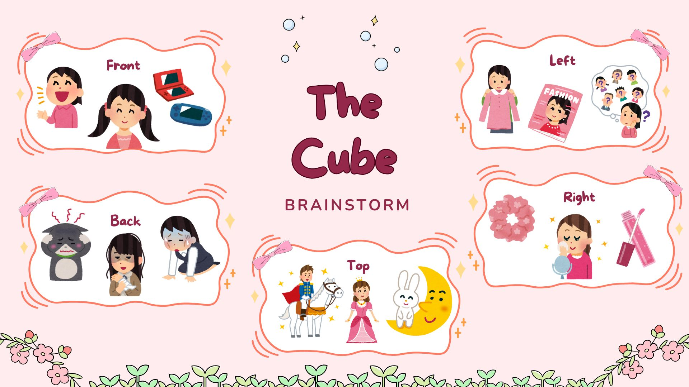
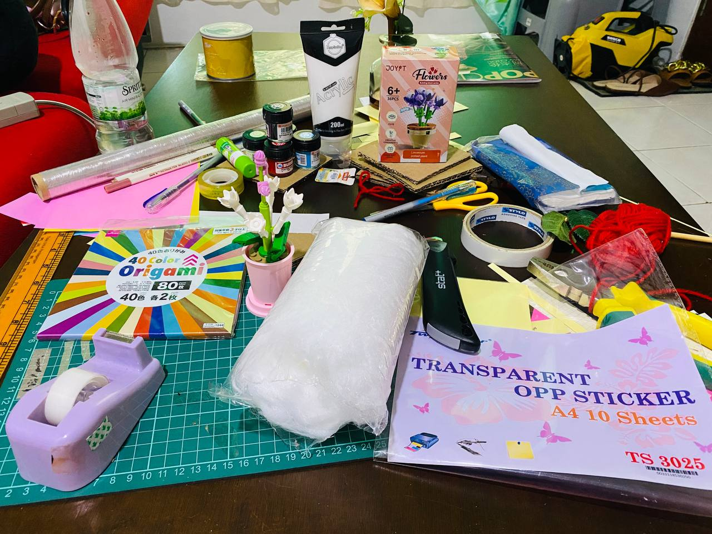
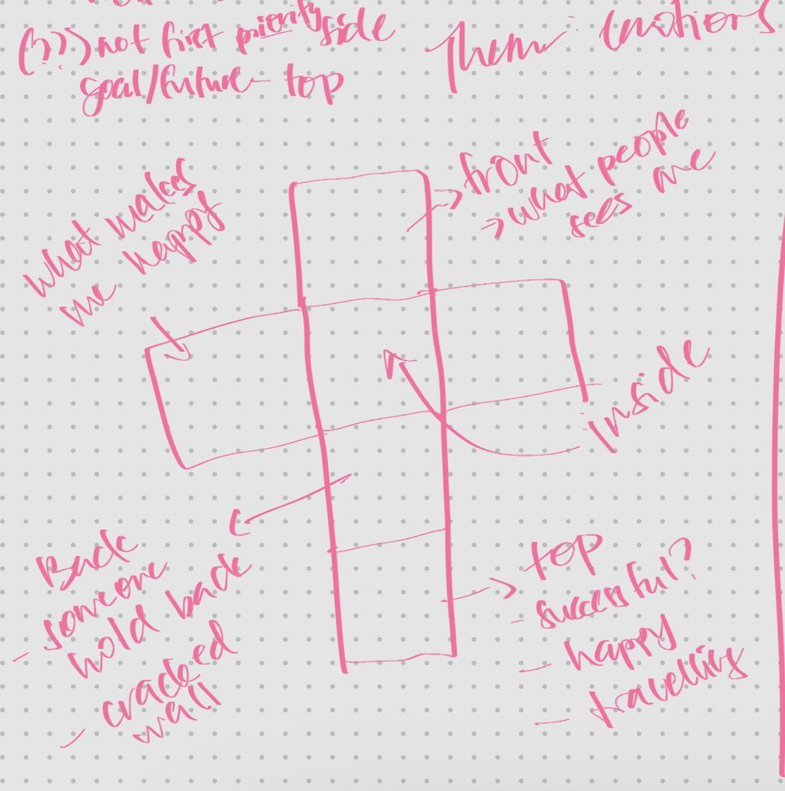
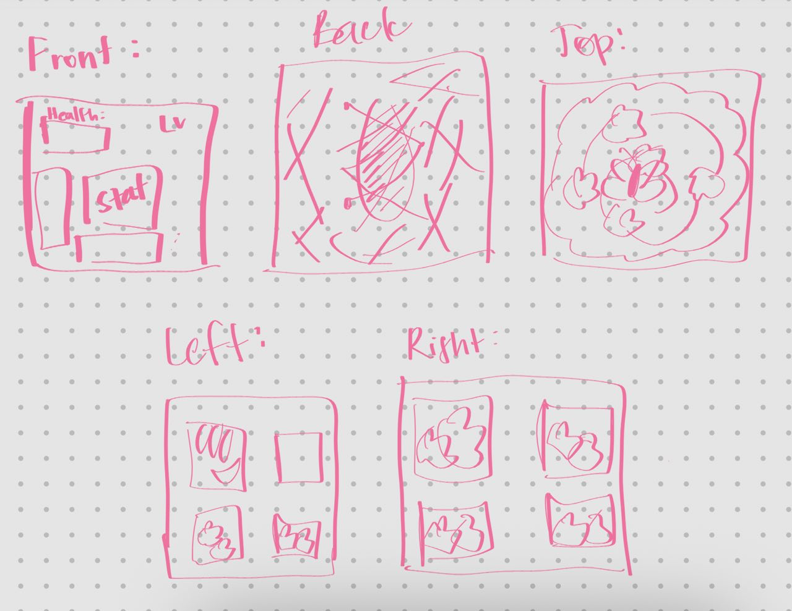
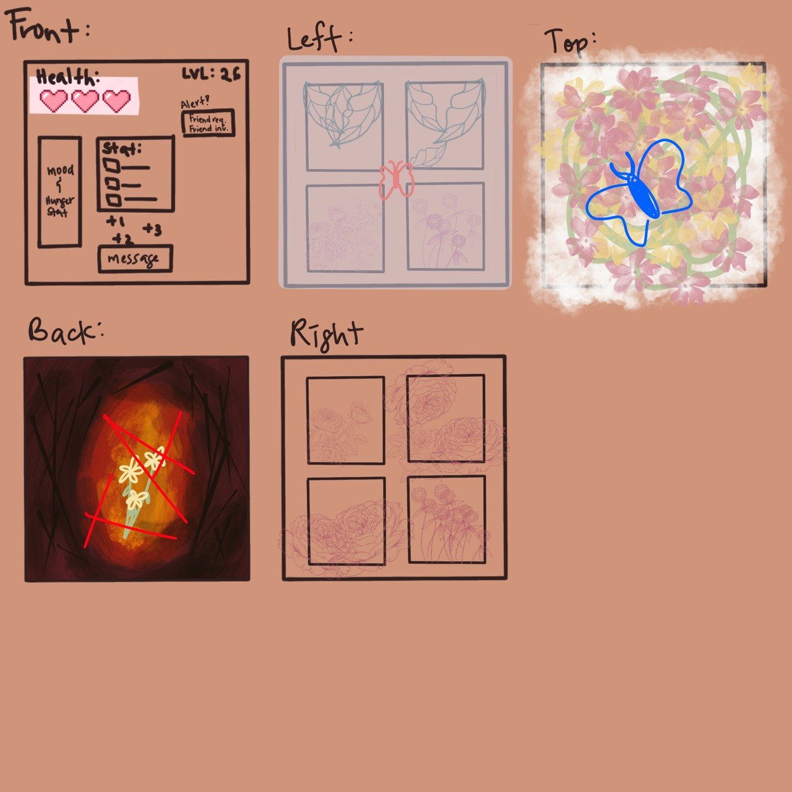
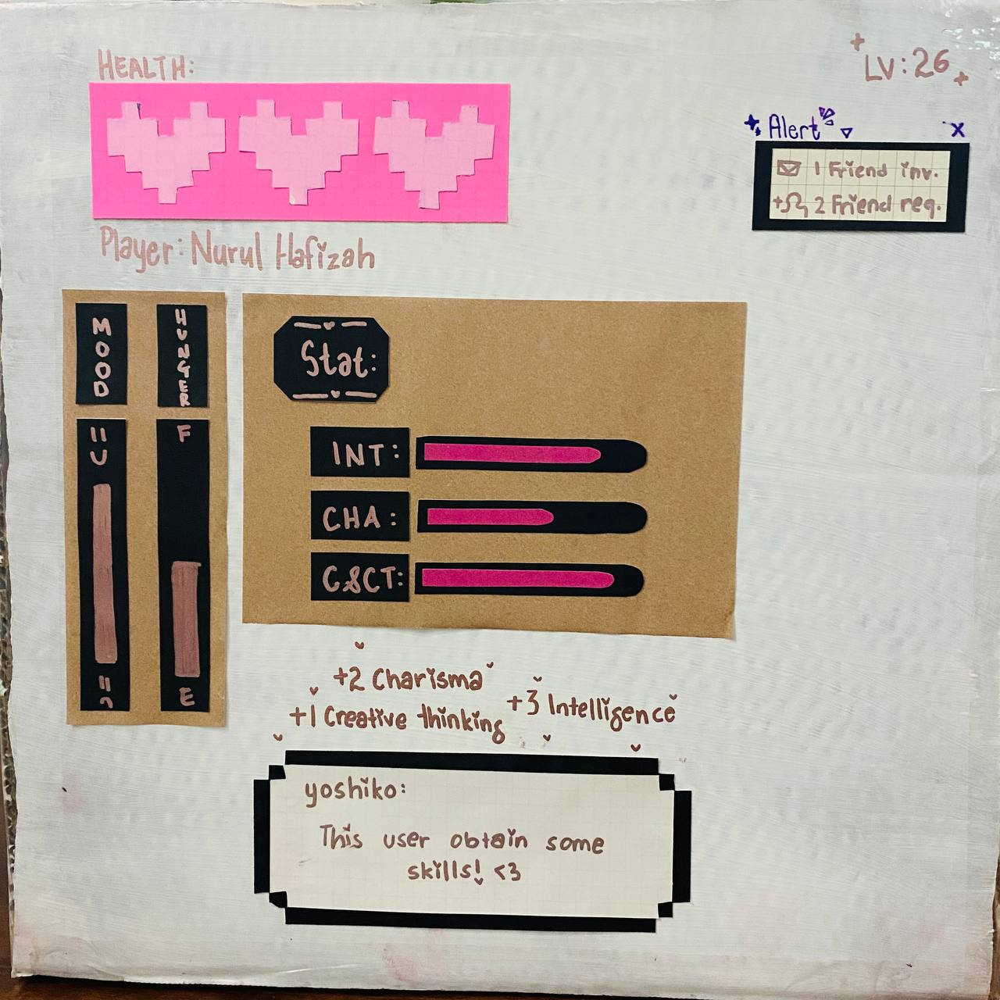
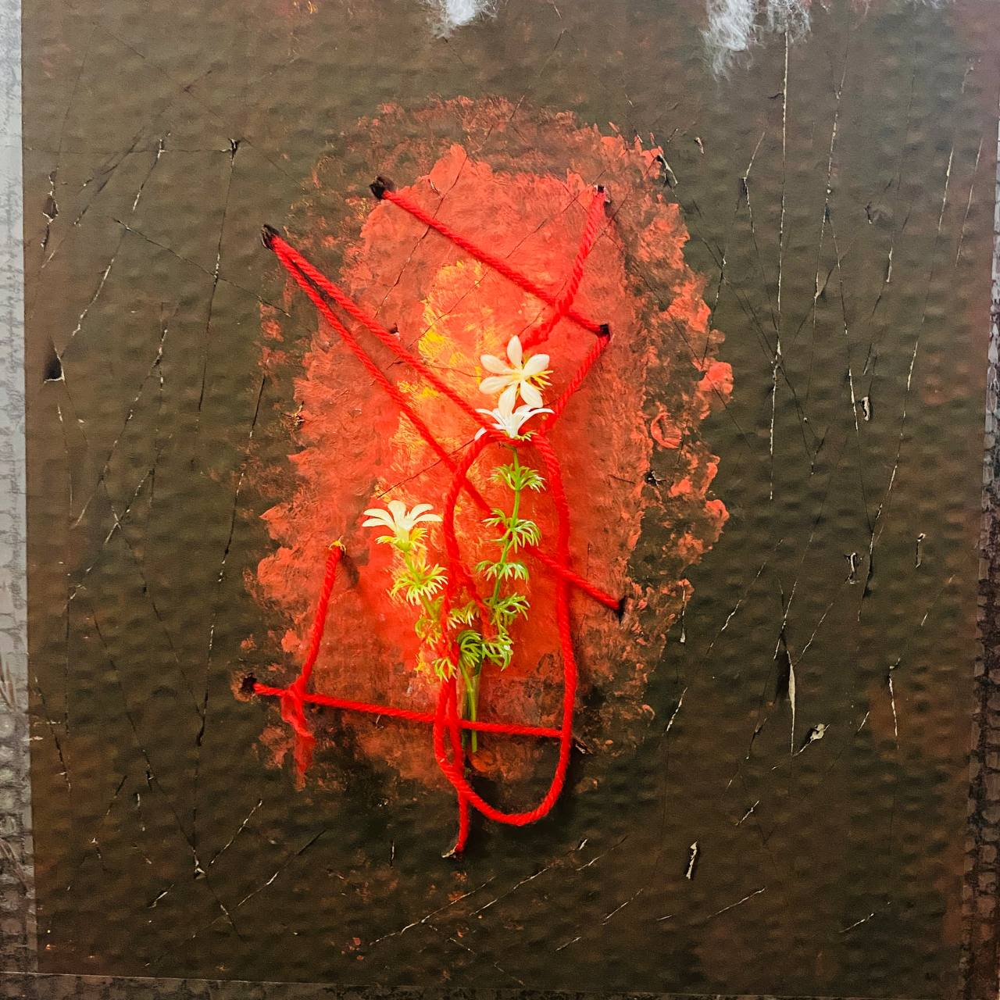
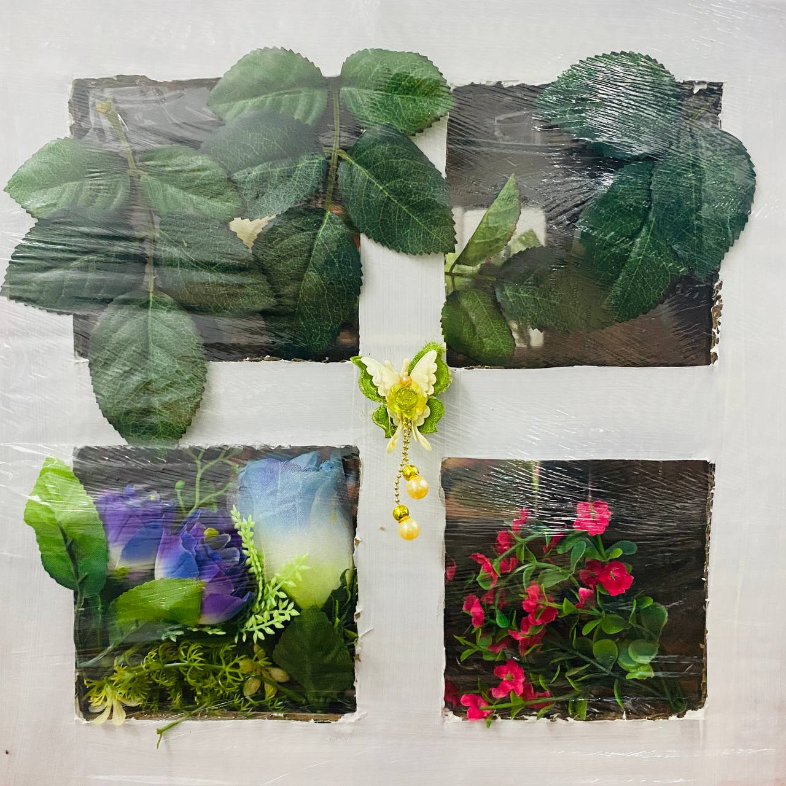
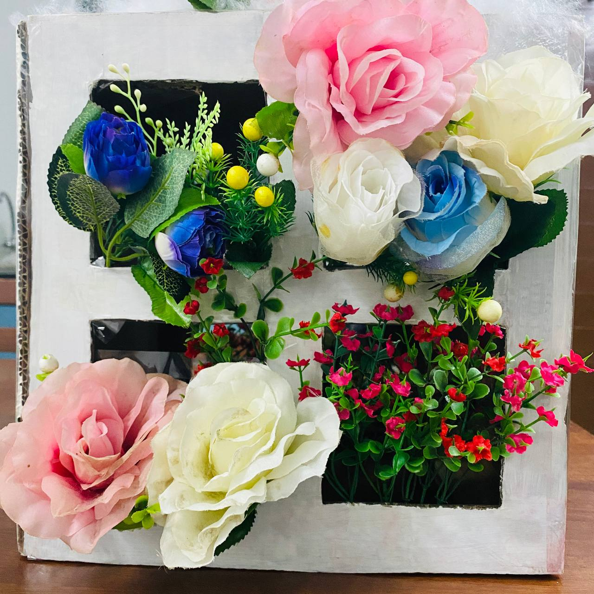
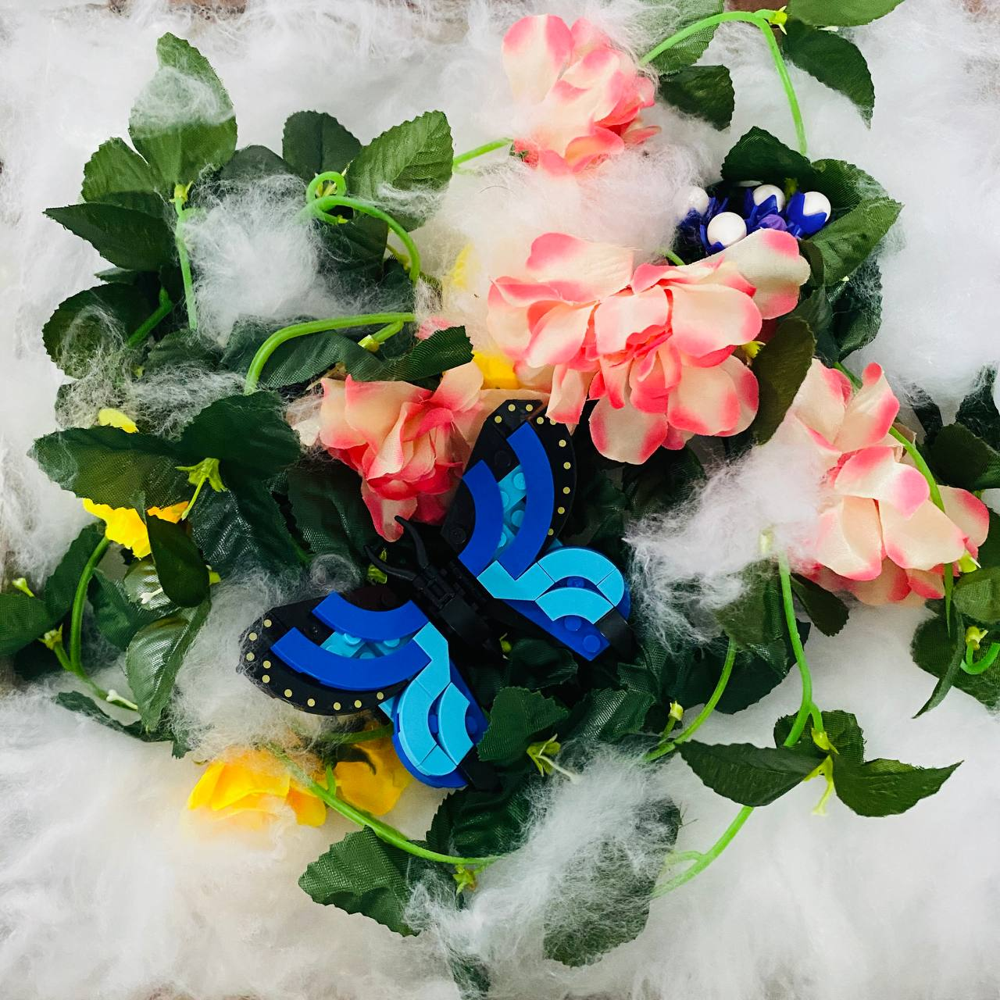

Theme: Emotion
Most of my friends see me as a "happy-go-lucky" person and a social butterfly. However, there are other parts of myself that I don't always expose because they are hard to explain. Through this project, I was able to explore myself more deeply, express those hidden emotions, and translate them into The Cube project using techniques learned in GKU1103
This section outlines the brainstorming process and initial ideas for creating The Cube.

Here are the materials used to build The Cube:

Note on material changes: In my early plan, I wanted to use clay, paper flowers, and clear nail polish. I improvised by using fake flowers and alternative items due to staying in and budget limits (and uhm... money T-T)!
1. First Sketches: The raw ideas and initial concepts for the cube.
2. Refining Sketches: Adding, removing, and filtering early ideas.
3. Final Blueprint: The finalized design stages used to build the physical cube.



The cube represents different facets of emotion across its surfaces:





Want to watch the process? Check out my video journey!
Watch The Cube Vlog 🎥